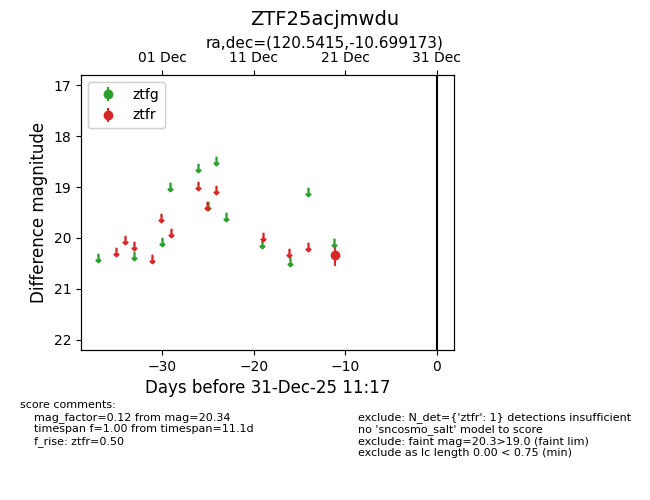
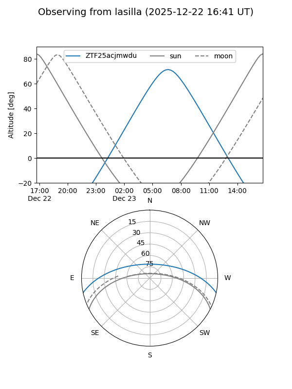
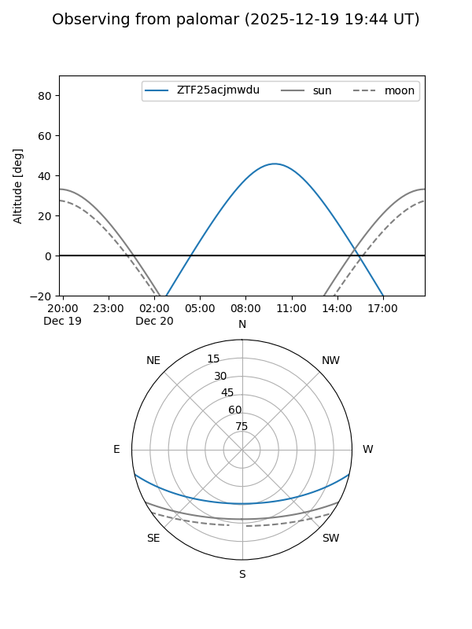

ZTF25acjmwdu
Target ZTF25acjmwdu at 2025-12-20 11:34
Aliases and brokers:
FINK: fink-portal.org/ZTF25acjmwdu
Lasair: lasair-ztf.lsst.ac.uk/objects/ZTF25acjmwdu
ALeRCE: alerce.online/object/ZTF25acjmwdu
alt names
ZTF25acjmwdu (ztf,fink_ztf)
Coordinates:
equatorial (ra, dec) = 120.5415,-10.69917
equatorial (HMS+DMS) = 08:02:09.97,-10:41:57.02
galactic (l, b) = (230.7730,+10.42606)
Flags:
Photometry:
last ztfr=20.34
1 ztfr detections
Lightcurve

Visibility


Additional plots